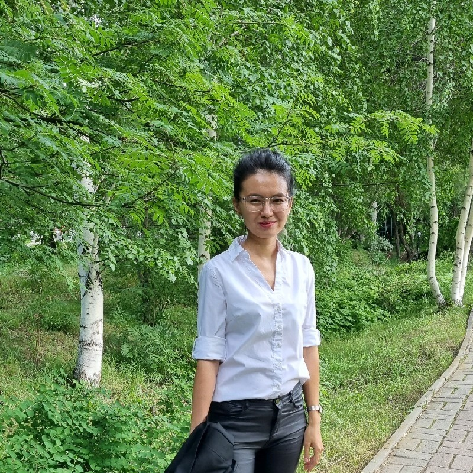

Способы связаться:
Основные навыки:
- ASP.NET MVC
- PostgreSQL
- .NET Core
- Python
- REST API
- Machine Learning
Certifications:
- Modernizing Data Lakes and Data Warehouses with GCP
- Enterprise Networking, Security, and Automation (ENSA)
- Google Cloud Big Data and Machine Learning Fundamentals
Yerkezhan Assubayeva
Senior Full-Stack Engineer
Усть-Каменогорск, Восточно-Казахстанская область, Казахстан
Общие сведения
I am a backend developer with industry experience building ERP system and web applications. I specialize in C# and also have experience working with Machine learning with Python, writing TSQL queries, views, stored procedures, and functions in MS SQL, customer-facing REST APIs
Опыт работы
| Место работы | Должность | Период |
|---|---|---|
| ТОО Rating | Senior .NET Software Engineer | августа 2022 - Present (1 год 1 месяц) |
| ООО "Азия Авто" | Middle .NET Software Engineer | ноября 2018 - Present (4 года 10 месяцев) |
| Narxoz University | Главный программист | июля 2014 - апреля 2018 (4 года) |
| Казцинк/Kazzinc | Ведущий программист | июля 2011 - апреля 2014 (3 года 10 месяцев) |